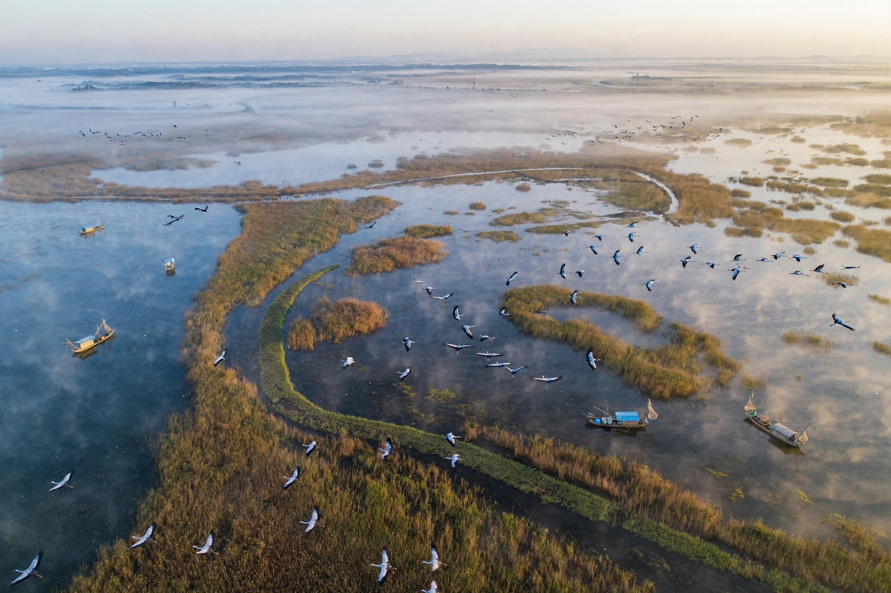

Poyang Lake (Chinese: 鄱阳湖; pinyin: Póyáng Hú) is the largest freshwater lake in China, located in Jiujiang, Jiangxi Province. Fed by the Gan, Xin and Xiu rivers, it drains north into the Yangtze River.

| Location | Jiangxi, China |
|---|---|
| Type | Freshwater lake |
| Surface area | 3,283 km² (high water) |
| Average depth | 8.4 m |
The lake fluctuates dramatically with the seasons, shrinking to under 1,000 km² in dry winters and expanding in summer floods — described as 'a river in winter, a lake in summer'. Its wetlands are a Ramsar site and the principal wintering ground for the critically endangered Siberian crane, hosting around 98% of that species, as well as Oriental storks and the Yangtze finless porpoise.
In 1363 the lake was the site of the Battle of Lake Poyang, one of the largest naval battles in history, decisive in Zhu Yuanzhang's founding of the Ming dynasty. In recent decades drought, sand mining and upstream damming — including debate over the proposed Poyang Lake Dam — have shrunk the lake and threatened its ecology.